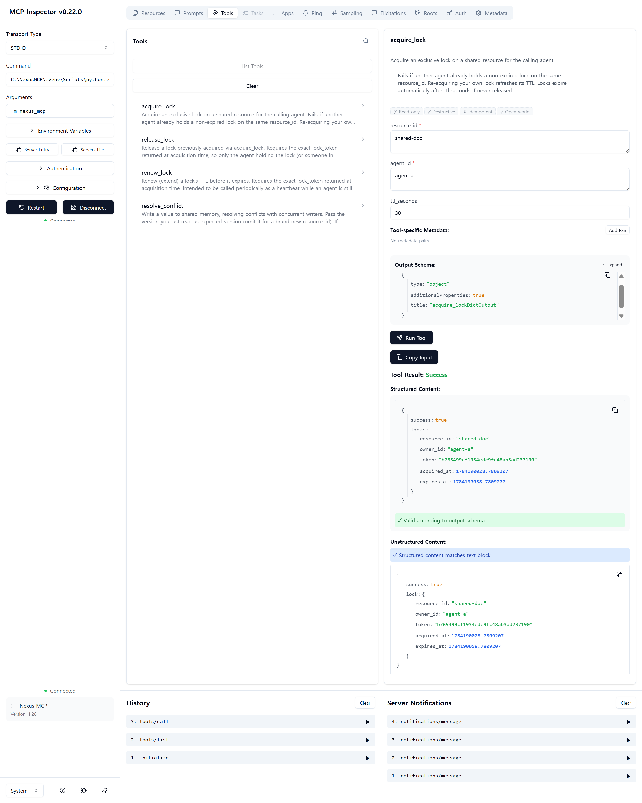
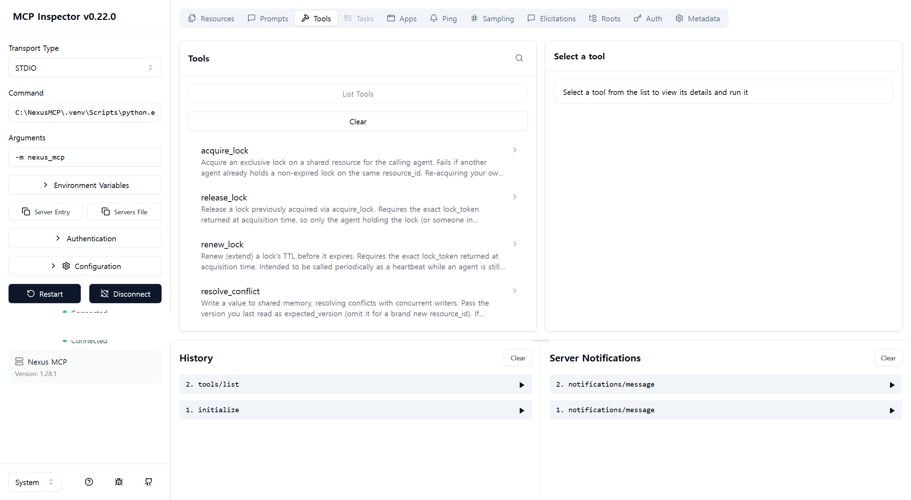
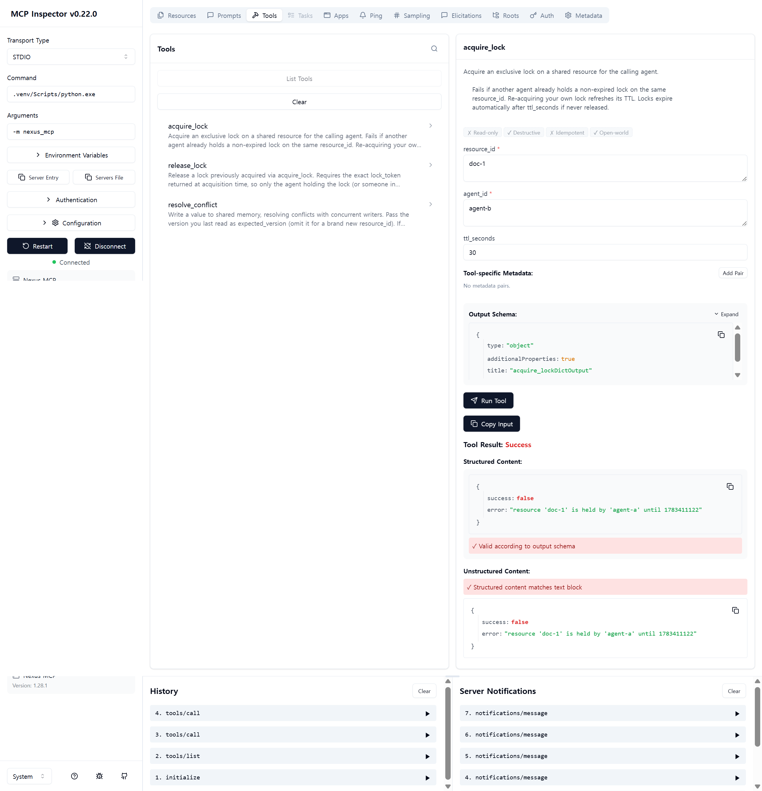
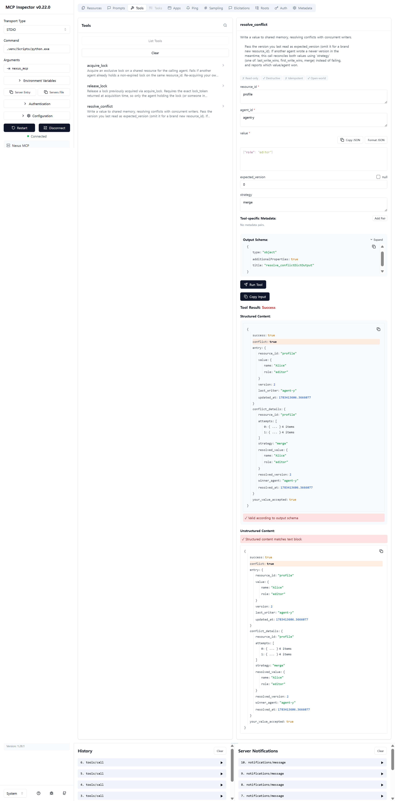
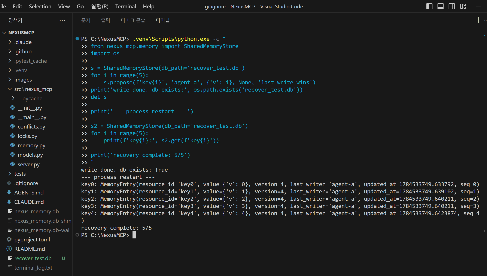
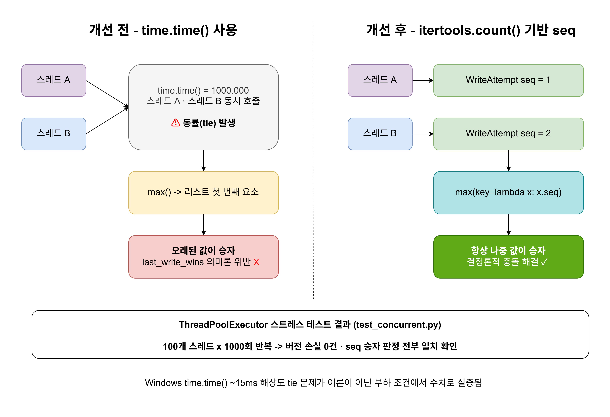
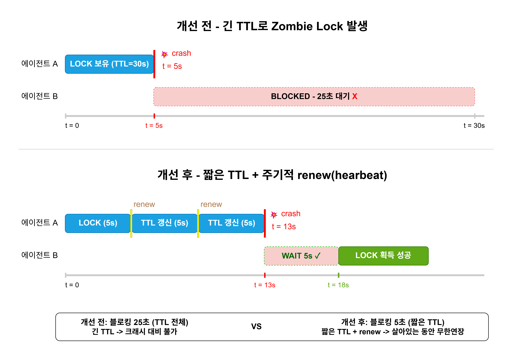
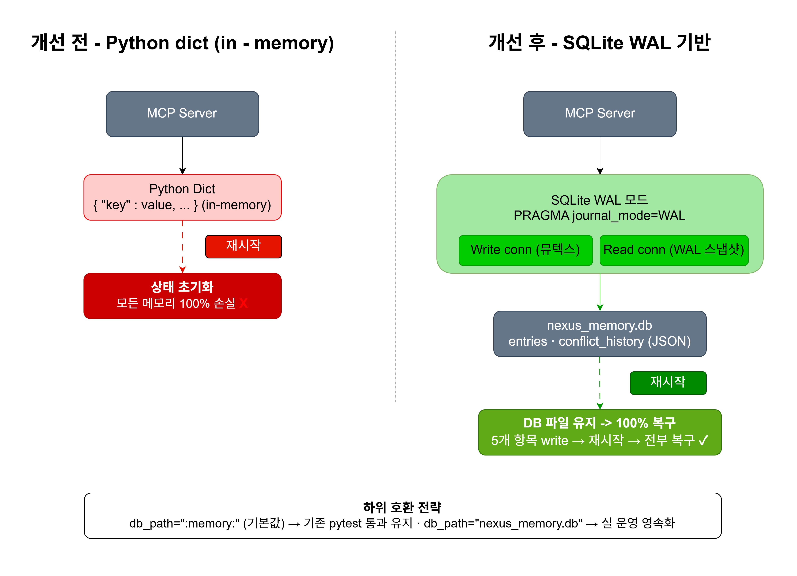

2022년부터 웹 풀스택 · AI/NLP · DevOps/클라우드 전반을 직접 설계하고 배포하는 방식으로 개발 역량을 쌓았습니다.
ShowU에서 k6 동시 200명 부하테스트로 Race Condition을 재현해 중복 예약 9건 → 0건을 달성했고, PrivateGPT에서 임베딩 캐싱으로 처리 시간을 2.24초 → 0.08초로 단축했습니다. TeamBuilder AI 공모전(506팀)에서 CI/CD 배포 성공률을 ~70% → 100%로 개선했고, Nexus MCP에서 멀티 에이전트 공유 메모리 충돌을 SQLite WAL + 분산 락으로 해결했습니다.
네 프로젝트 모두 문제를 직접 재현하고 수치로 검증했습니다.

기획 배경
팀원 중 뮤지컬에 관심 있는 분이 있었고, 당시 인터파크 같은 단순 티켓 예매 사이트는 있었지만 뮤지컬·연극 배우 지망생을 위한 인프라는 빈약했습니다. 공간 대여, 오디션 공지, 커뮤니티 등 지망생에게 필요한 기능과, 예술을 좋아하는 일반인을 위한 티켓 예매·VOD·굿즈 구매를 한 곳에서 해결할 수 있는 통합 플랫폼이 부족하다는 걸 확인했습니다.
팀원 6명이 직접 시장 조사와 도메인 검색을 통해 이 니즈를 검증했고, 예술가 지망생과 예술 애호가 두 타겟을 모두 아우르는 통합 플랫폼으로 ShowU를 기획했습니다.
서비스 소개
예술가 지망생과 팬을 연결하는 통합 플랫폼. 공연 티켓 예매·공간 대여·굿즈/경매·VOD·커뮤니티 6개 도메인이 하나의 결제 흐름으로 연결된 구조로, k6 동시 200명 부하테스트로 Race Condition과 결제 위변조를 직접 재현하고 해결했습니다.
DB 레벨 Unique Index → 애플리케이션 레벨 트랜잭션 → Toss 서버사이드 검증으로 이어지는 3단계 방어 구조로 데이터 정합성과 결제 보안을 완성했습니다.
담당 역할
프론트엔드 — 공연 목록 / 상세 / 좌석 선택(10×10 그리드, 최대 2매) / 티켓 결제 구현. 공간 대여 목록 / 상세 / 시간 선택 / 공간 결제 구현. 경매·굿즈 결제 페이지 프론트 구현 (팀원 담당 상품 페이지에 결제 파트 연결)
백엔드 — 좌석 예약 / 공간 대여 / 티켓·공간 결제 / 공연·공간 조회 / 찜하기 / 댓글 API 설계 및 구현. 경매·굿즈 결제 API 구현


{ showId, date, time, seatNumbers } 복합 Unique Index를 추가했습니다.| 항목 | 개선 전 | 개선 후 |
|---|---|---|
| 중복 예약 | 9건 ❌ | 0건 ✅ |
| 서버 500 오류 | 발생 | 없음 ✅ |
| TPS | 60.8/s | 31.8/s |
| 평균 응답시간 | 315ms | 1,100ms |
| P95 응답시간 | 1.4s | 3.49s |


generateRandomString()으로 직접 생성해 백엔드로 전달하는 구조였습니다.| 항목 | 개선 전 | 개선 후 |
|---|---|---|
| 금액 조작 요청 | 통과 ❌ | FORBIDDEN 403 ✅ |
| DB 저장 | 조작 금액 저장 | 검증 후 저장 |
| 적용 도메인 | - | 티켓/공간/경매/굿즈 |

기획 배경
🔴 외부 LLM API(OpenAI 등) — 문서 데이터가 외부 서버로 전송되어 기업·의료·법무 등 민감한 도메인에서 프라이버시 문제 발생. API 비용도 지속 발생.
✅ PrivateGPT — 5개월간의 LangChain/RAG/NLP 학습을 바탕으로, 9개 챗봇 프로젝트 중 외부 API 호출 없이 완전 로컬에서 동작하는 프라이버시 보장 RAG 챗봇을 포트폴리오 대표 프로젝트로 선정했습니다.
서비스 소개
업로드한 문서에 대해 질문할 수 있는 로컬 기반 RAG 챗봇. 임베딩 모델과 LLM 모두 로컬(Ollama, 임베딩은 nomic-embed-text / LLM은 Mistral)에서 실행되어 외부 API 호출 없이 동작하며, 민감한 문서도 안전하게 처리할 수 있는 프라이빗 AI 시스템.
OpenAI API를 사용하면 문서 데이터가 외부 서버로 전송되어 프라이버시 문제가 발생하고 API 호출 비용도 발생합니다. 임베딩과 LLM 모두 로컬에서 실행하는 Ollama(임베딩: nomic-embed-text, LLM: Mistral) 조합을 선택해 "Private"GPT라는 이름처럼 데이터가 외부로 나가지 않는 구조를 구현했습니다.
담당 역할
RAG 파이프라인 설계(문서 로딩→청킹→임베딩→벡터 검색→답변 생성), 임베딩 캐싱 구조 구현, 대화 히스토리 체인 연결, Streamlit UI 구현


| 항목 | 개선 전 | 개선 후 |
|---|---|---|
| 임베딩 모델 | Mistral 7B (LLM 겸용) ❌ | nomic-embed-text 137M ✅ |
| 임베딩 시간 (캐시 미적용) | 118.27초 ❌ | 2.24초 ✅ |
| 임베딩 시간 (캐시 적용) | 2.24초 | 0.08초 ✅ |
| 캐싱 개선율 | - | 96.6% |

🔄 재구성된 질문: What is FAISS, a vector similarity search library developed by Facebook AI Research?
# 개선 전: 관련성 무관하게 무조건 4개 반환 retriever = vectorstore.as_retriever() # 개선 후: 관련성 점수 기준 이하 문서 제외 retriever = vectorstore.as_retriever( search_type="similarity_score_threshold", search_kwargs={"score_threshold": 0.05, "k": 4} )

기획 배경
제1회 K.I.T. 바이브코딩 공모전(506팀)에서 교육 현장의 페인포인트를 해결하는 서비스를 개발하게 됐습니다. 팀원 중 지인인 은퇴한 초등학교 교사에게 직접 인터뷰한 결과, 학년 담임 선생님 전체가 한자리에 모여 생활기록부를 보며 반배정을 수작업으로 조합하는데 하루 종일 걸린다는 것을 확인했습니다.
성적·성격·성향·특이사항(미술 특기생, 학급 반장 등) 등 복합 조건을 동시에 처리해야 하는 문제에 알고리즘과 LLM API(공모전 필수 요건)를 병렬 실행하는 하이브리드 구조로 접근했습니다. LLM 장애 시 알고리즘 결과로 즉시 폴백해 서비스 연속성을 보장합니다.
서비스 소개
교육기관의 수작업 팀/반 배정을 AI로 자동화한 웹 서비스. 교사가 학생 명단 CSV를 업로드하면 AI와 최적화 알고리즘이 성적·성격·성향·특이사항 등 복합 조건을 종합해 균형 잡힌 팀/반 구성을 자동 배정합니다.
자연어 AI 도우미("성적 균형 맞춰줘")로 배정 결과를 실시간 조정하고, 팀별 균형 점수와 분석 대시보드로 배정 결과를 시각화합니다.
담당 역할
서비스 기획 총괄 — 은퇴 초등학교 교사 인터뷰로 문제를 검증하고 서비스 기획. 벨빈(Belbin) 팀역할론 개념을 참고해 섀넌 엔트로피 기반으로 성격 유형 분포 다양성을 측정하는 방식과 제약 기반 힐클라이밍 최적화를 결합한 4단계 하이브리드 알고리즘 설계. 로컬 알고리즘과 Claude Sonnet 4 API 병렬 실행 구조 및 균형 점수 가중치(성적 30% / 성격 26% / 성향 26% / 성별 10% / 나이 4% / 인원 4% 가중 로그 곱연산) 설계. CLAUDE.md / AGENTS.md 기반 AI 코딩 컨벤션 정립.
AWS 배포 자동화 (CI/CD 파이프라인 구축) — 공모전 시작 3일 전, ShowU 경험 기반으로 GitHub Actions 파이프라인 사전 구축·검증 → 공모전 당일 Next.js 16에 바로 적용. GitHub Actions + Docker Hub + AWS EC2 전체 파이프라인 직접 설계·구현. EBS 볼륨 확장, 빌드 시점 vs 런타임 환경변수 분리 보안 설계, 운영 검증 절차 수립.


Dokcerfile), 보안 그룹 SSH 포트 차단, Docker 권한 미설정 등 오류 원인이 매번 달라 장애 감지와 대응에 수 분이 걸렸습니다.ANTHROPIC_API_KEY를 자동 인식하는데 AI_API_KEY로 설정해 AI 기능 전체가 동작하지 않는 문제도 발생했습니다.docker run -e)으로 설계했습니다.docker stop sensitive || true 패턴으로 컨테이너 미존재 시에도 파이프라인이 중단되지 않도록 방어했습니다.| 지표 | 개선 전 | 개선 후 |
|---|---|---|
| 배포 성공률 | ~70% | 100% |
| 배포 시간 | 수동 SSH | 평균 약 2분 |

docker pull 실행 시 no space left on device 에러가 조용히 발생하고 있었고, docker images 명령으로 확인하니 반복 배포로 누적된 이미지 4개(각 ~1GB)가 7.6GB EBS 볼륨을 가득 채운 상태였습니다.docker images 명령으로 누적 이미지 목록을 확인해 원인을 특정했습니다.growpart /dev/nvme0n1 1 + resize2fs /dev/nvme0n1p1로 파티션·파일시스템을 무중단 리사이즈했습니다.docker image prune)해 공간을 확보하고, 워크플로우에 --no-cache 옵션을 표준화해 레이어 누적 자체를 방지하는 구조를 잡았습니다.docker pull이 정상화되어 이후 배포 = 서비스 반영이 일치하게 됐습니다.docker ps, docker logs를 활용한 배포 후 검증 절차를 정립해 동일 유형의 Silent Failure 재발을 방지했습니다.
| 지표 | 개선 전 | 개선 후 | 효과 |
|---|---|---|---|
| 배포 성공률 | ~70% | 100% | 실패 26건 → 0건 |
| 배포 시간 | 수동 SSH | 평균 약 2분 | GitHub Actions 로그 실측 |
| 장애 대응 시간 | 수 분 | 수 초 | 90% 이상 단축 |
| EBS 용량 | 7.6GB | 30GB | 약 4배 확장 |
| 팀 균형 점수 | — | 92.8점 | 팀 간 성적 차이 0.1점 |

기획 배경
🔴 Anthropic 공식 Memory MCP — JSON 파일 기반이라 여러 에이전트가 동시에 쓰면 파일이 손상될 수 있음. 동시 접근 제어 없음.
🔴 유사 프로젝트 (mnehmos/synch-mcp 등) — 락 관리는 있으나, 충돌 발생 시 어떤 값을 채택할지 결정하는 충돌 해결 전략이 MCP 도구 레벨에서 분리되어 있지 않음.
✅ Nexus MCP — ShowU에서 Race Condition(중복 예약 9건 → 0건)을 해결한 경험을 AI 에이전트 환경에 적용해, 동시 접근 제어와 충돌 해결 전략을 명확히 분리한 경량 MCP 서버를 만들게 됐습니다.
서비스 소개
여러 AI 에이전트가 동일한 공유 메모리 키에 동시 접근할 때 발생하는 충돌을 해결하는 MCP(Model Context Protocol) 서버. Python MCP SDK의 FastMCP 위에서 동작하며, 핵심 로직(locks.py / conflicts.py / memory.py)은 MCP SDK에 의존하지 않는 순수 Python으로 분리해 단위 테스트만으로도 검증 가능하게 설계했습니다.
acquire_lock으로 선점권을 확보하면 다른 에이전트의 쓰기를 막을 수 있고, 락을 쓰지 않는 경로에서는 resolve_conflict가 버전을 비교해 충돌을 처리합니다. 자주 경합하는 자원은 락으로 직렬화하고, 경합이 드문 자원은 락 없이 쓰되 충돌 시에만 전략으로 해결하는 이중 구조입니다. renew_lock으로 heartbeat을 유지해 Zombie Lock을 방지하며, 충돌 시에는 last_write_wins / first_write_wins / merge 전략으로 자동 병합합니다. 공유 메모리 상태는 SQLite WAL로 영속화되어 서버 재시작 후에도 100% 복구됩니다. ShowU 프로젝트에서 MongoDB 트랜잭션으로 Race Condition(동시 예약 중복 9건 → 0건)을 해결한 경험을 AI 에이전트 환경에 적용했습니다.
현재 구조는 MCP 서버 단일 인스턴스를 전제로 합니다. 락이 threading.Lock 기반이라 프로세스 내 스레드 간 배타성만 보장하며, 여러 인스턴스로 확장하려면 Redis 등 외부 저장소 기반 락으로 교체해야 합니다.
담당 역할
MCP 서버 설계 및 구현 — SQLite WAL 모드 기반 공유 메모리 설계. acquire_lock / release_lock / renew_lock / resolve_conflict 4개 도구 구현. Zombie Lock 방지 heartbeat 패턴, 재시작 후 상태 복구, 충돌 해소 전략(last_write_wins / first_write_wins / merge) 구현.
테스트 및 검증 — pytest 21개 테스트 작성 (locks / memory / concurrent 3개 파일). MCP Inspector(localhost:6274)에서 stdio 프로토콜로 실제 도구 호출 검증.
AI 코딩 컨벤션 문서화 — CLAUDE.md / AGENTS.md 작성. 에이전트가 코드베이스 구조·설계 원칙·테스트 규칙을 즉시 파악할 수 있도록 정리.





itertools.count() 기반 seq로 순서 판정을 설계했지만, 단위 테스트는 단일 스레드 시나리오만 다루고 있었습니다.seq 판정이 무너지지 않는지는 부하 테스트로 실증된 적이 없었습니다.tests/test_concurrent.py를 concurrent.futures.ThreadPoolExecutor로 신규 작성했습니다.test_concurrent_lock_exclusivity: 50개 스레드가 동일 resource_id에 동시 acquire_lock 시도 → 성공이 정확히 1건인지 검증.test_concurrent_resolve_deterministic: 100개 스레드가 의도적으로 stale한 expected_version으로 동시 쓰기 → 최종값이 항상 가장 높은 seq를 가진 쓰기와 일치하는지 1000회 반복 검증.test_concurrent_no_data_corruption: acquire_lock → resolve_conflict → release_lock 패턴으로 50개 스레드 순차 쓰기 → 최종 version == 50, 손실 0건 검증.time.time()이 아닌 seq를 쓴 이유(Windows ~15ms 해상도 한계)가 이론이 아니라 실제 부하 조건에서 수치로 증명됐습니다.| 항목 | 검증 전 | 검증 후 |
|---|---|---|
| seq 판정 검증 범위 | 단일 스레드 단위 테스트만 | 최대 100개 스레드 동시 부하 ✅ |
| 결정론 반복 검증 | 1회성 통과 | 1000회 반복 전부 동일 결과 ✅ |
| 최종 버전 무결성 | 미검증 | 50~100개 동시 쓰기 후 버전 손실 0건 ✅ |

acquire_lock은 TTL이 지나야 자동 해제됩니다. 에이전트가 락을 쥔 채로 예기치 않게 종료되면(크래시, 네트워크 단절 등) 다른 에이전트는 원래 설정된 TTL이 끝날 때까지 무조건 블로킹됩니다.LockManager에 renew(resource_id, agent_id, lock_token, ttl_seconds) 메서드를 추가해 heartbeat 패턴을 지원했습니다.renew를 호출해 TTL을 계속 연장합니다. 에이전트가 살아있는 동안은 락이 끊기지 않고, 크래시로 heartbeat이 멈추면 그 즉시 원래의 짧은 TTL만큼만 기다리면 됩니다.server.py에는 동일한 dict 반환 패턴({"success": false, "error": ...})을 지키는 renew_lock MCP 도구를 추가했습니다.| 항목 | 개선 전 | 개선 후 |
|---|---|---|
| 크래시 시 블로킹 시간 | 최초 설정 TTL 전체 | 짧은 TTL 하나로 고정 가능 ✅ |
| 정상 작업 중 락 유지 | TTL 안에 끝내야 함 | renew 호출로 무한정 연장 가능 ✅ |
| 테스트 검증 | — | TTL 0.05s → 0.03s 시점 renew → 0.06s 시점에도 유효 확인 ✅ |

SharedMemoryStore는 순수 Python dict로 상태를 들고 있었습니다. MCP 서버(stdio 프로세스)가 재시작되면 그동안 쌓인 모든 버전 정보, 충돌 해결 기록이 통째로 사라졌습니다.SharedMemoryStore를 SQLite 기반으로 재설계했습니다. db_path 파라미터를 받아 기본값은 기존 테스트 하위 호환을 위해 :memory:로 유지하고, 연결 직후 PRAGMA journal_mode=WAL을 설정합니다.entries / conflict_history 테이블에 value를 JSON으로 직렬화해 저장하고, propose()의 충돌 판정 로직(seq 비교 포함)은 그대로 유지한 채 저장소만 dict → SQLite로 교체했습니다.get / conflict_history)는 별도 커넥션 + 별도 락으로 분리해 WAL의 이점(쓰기 중에도 읽기가 블로킹되지 않음)을 살렸습니다. 실 운영에서 server.py의 SharedMemoryStore()도 db_path="nexus_memory.db"로 변경했습니다.:memory: 기본값 덕분에 테스트는 여전히 빠르고 격리되어 있고, 실제 서버만 파일 기반으로 전환되어 재시작에도 살아남습니다.| 항목 | 개선 전 | 개선 후 |
|---|---|---|
| 재시작 시 상태 | 100% 손실 | nexus_memory.db에서 100% 복구 ✅ |
| 쓰기 중 읽기 | dict 직렬화로 동시성 없음 | 별도 커넥션으로 WAL 스냅샷 읽기 (1초 미만) ✅ |
| 기존 테스트 | — | test_memory.py 기존 6개 수정 없이 전체 통과 ✅ |